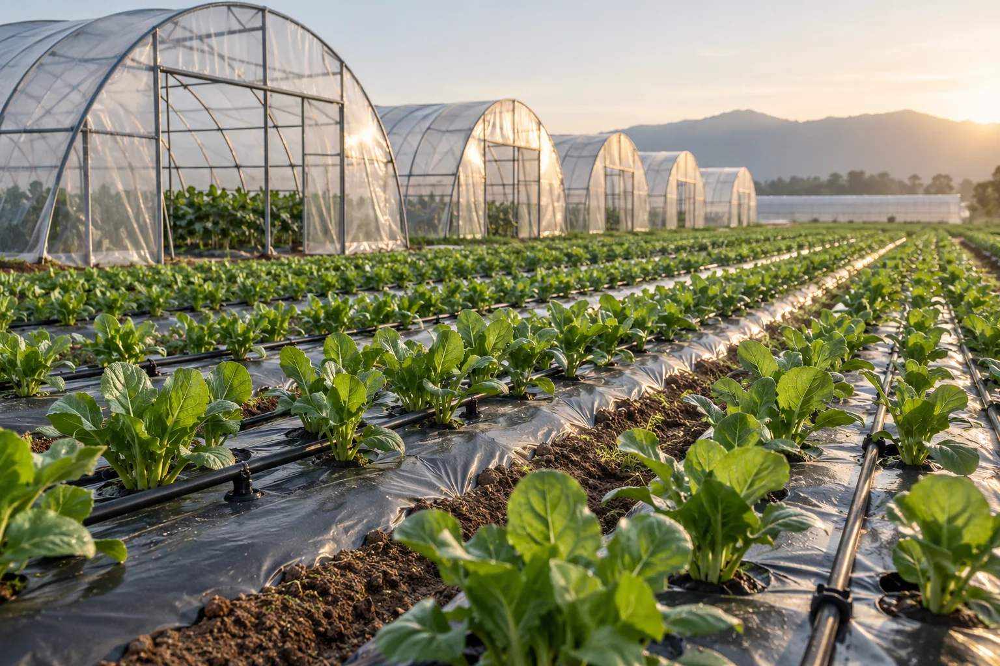
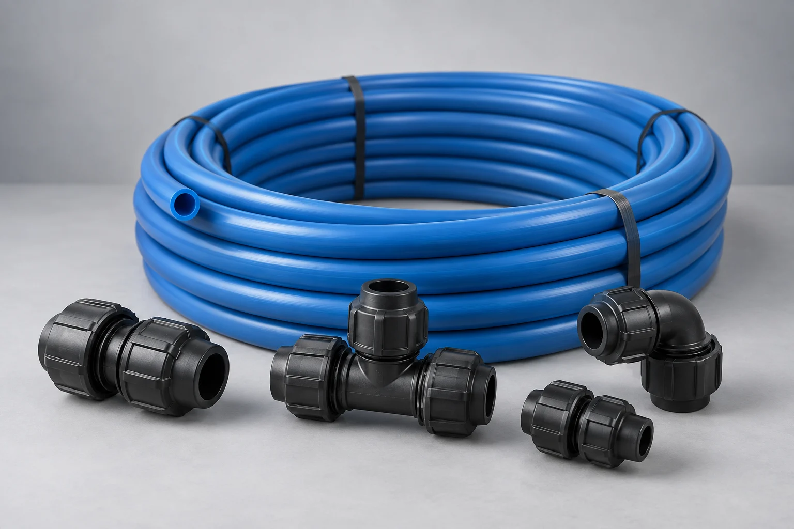
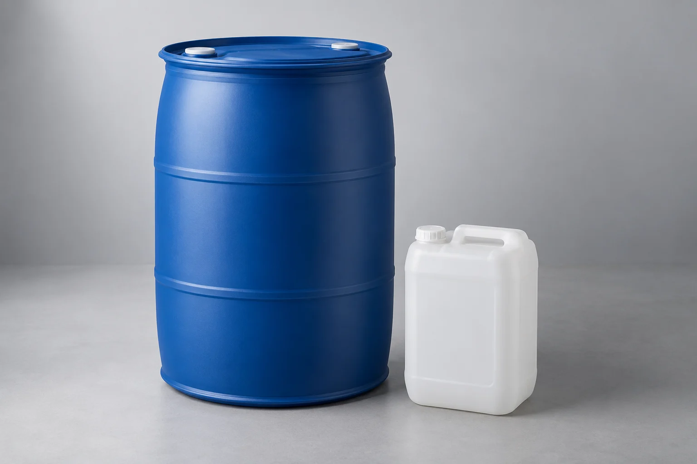
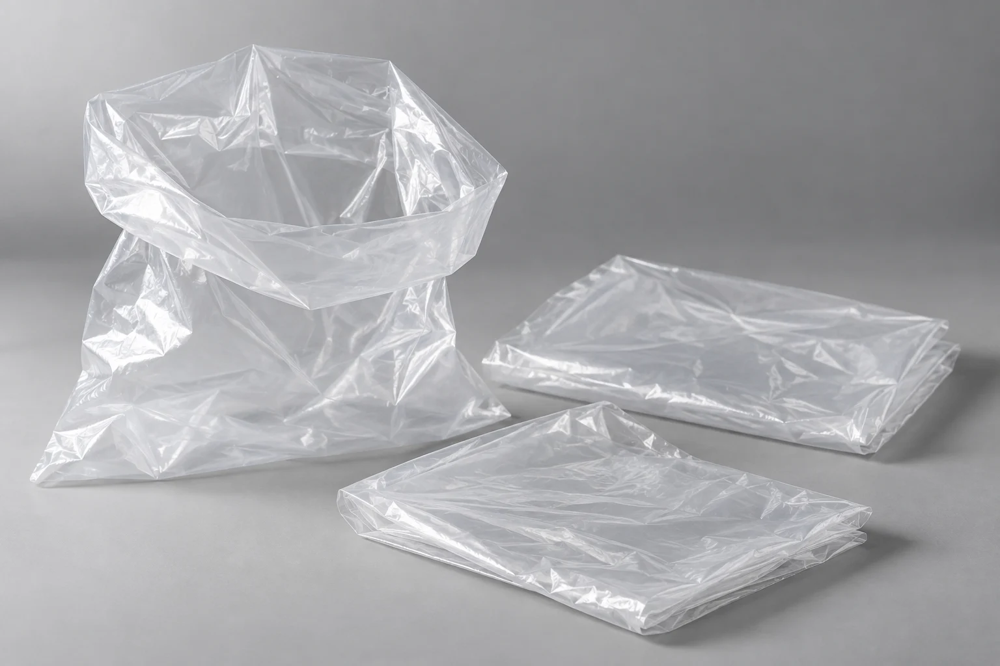
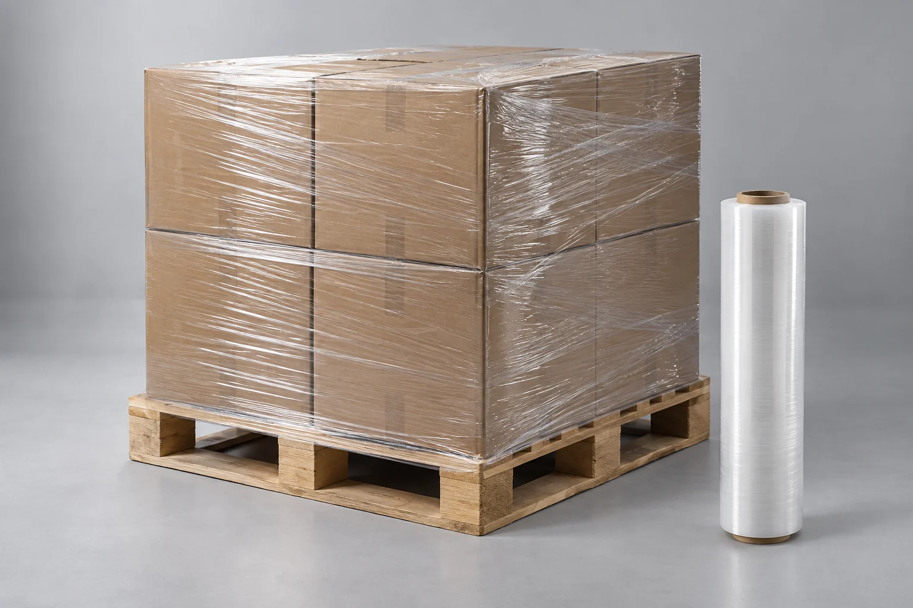
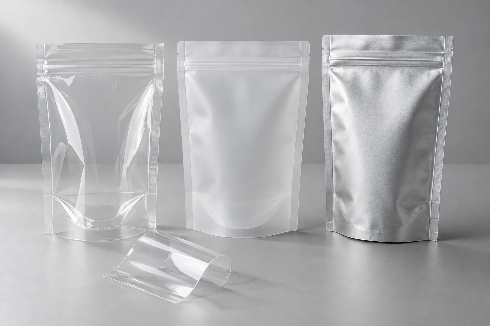
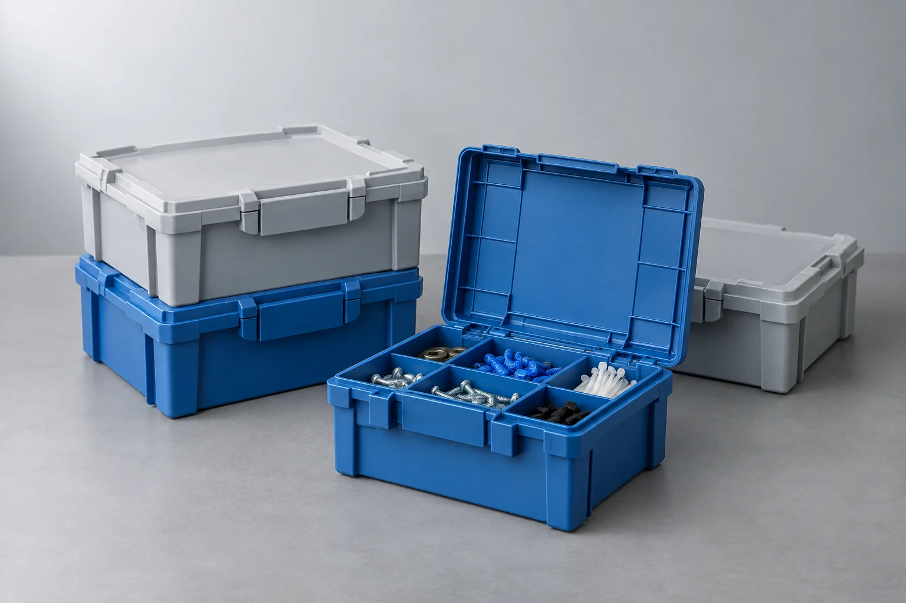
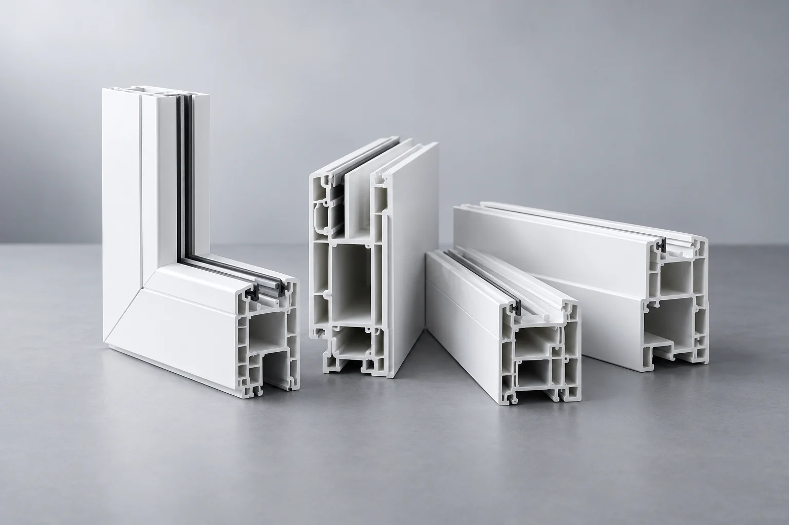

Agriculture & irrigation
Supporting what grows next.

Explore polymers for agricultural films, irrigation products and horticultural applications.
Applications to explore
- Greenhouse & mulch films
- Irrigation tubing
- Nursery containers
Products & material options.

Coiled pipe and fittings
Greenhouse and agricultural films
Start with these materials.

HDPE
High-density polyethylene
Industrial drums and containers · Coiled pipe and fittings · Storage boxes and organizers

LDPE
Low-density polyethylene
Flexible bags and liners · Flexible packaging pouches · Greenhouse and agricultural films

LLDPE
Linear low-density polyethylene
Flexible bags and liners · Pallet stretch wrap · Flexible packaging pouches
MDPE
Medium-density polyethylene
Coiled pipe and fittings

mPE
Metallocene polyethylene
Pallet stretch wrap · Flexible packaging pouches · Greenhouse and agricultural films

PP-H
PP homopolymer
Molded cylindrical housing · Circular trim — front · Circular trim — rear

PVC
PVC resin
Window and building profiles
Let’s define the right grade.
Outdoor exposure, target service life, UV stabilization, dimensions and growing environment.
Discuss this applicationMaterial suggestions are starting points. Confirm the grade, testing and compliance requirements for your application. Application scenes are illustrative.